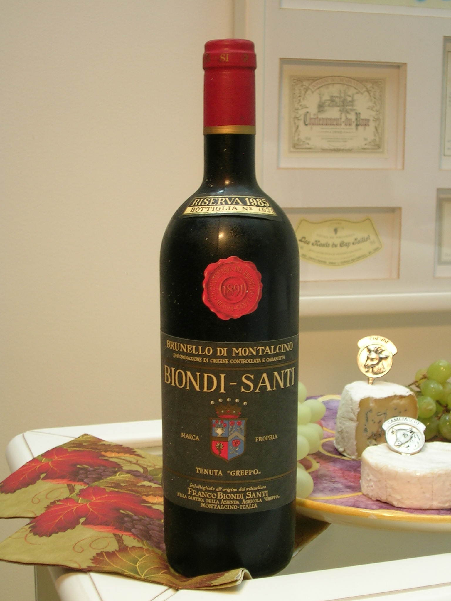

Os Melhores Vinhos da Itália
Conheça os vinhos italianos mais renomados e aprenda a harmonizá-los com seus pratos favoritos.
Chianti

Um vinho tinto de alta qualidade, produzido na região da Toscana, possui notas de frutas vermelhas, especiarias, amora, violeta, mirtilo, canela, anis estrelado, tabaco e baunilha
Brunello di Montalcino
Brunello di Montalcino, produzido na Toscana um vinho de alta qualidade, Visualmente, o Brunello di Montalcino apresenta coloração rubi intensa com reflexos granada, revelando, no nariz, aromas de frutas vermelhas e negras maduras, notas de especiarias, nuances terrosas, além de toques de baunilha.
Primitivo e Negroamaro
Primitivo e Negroamaro, produzido na Puglia, Aromas: notas de frutas maduras, especialmente ameixa e amora silvestre e notas leves de canela. Paladar: macio e aveludado. Harmonização: carnes vermelhas, brancas e queijos pouco maduros.